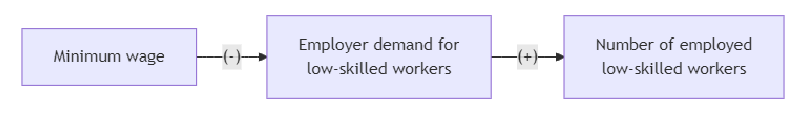

Section 5 Literature Review and Economic Theory
5.1 Objectives
- Understand why and how researchers perform a literature review
- Distinguish between popular and scholarly literature
- Understand the usefulness of both browsing and keyword searching
Note that your lit review will be relatively short and narrow compared to a literature review in a full paper. You’ll start with suggested papers from your faculty sponsor.
5.2 Finding Appropriate Papers
The papers in your lit review should be scholarly economics papers, but how do you tell if it’s an economics paper?
- Look at journal or where working papers are posted
- Published economics papers will almost certainly be in journals on this list
- Look at authors’ websites.
- Does at least one author have a Ph.D in economics?
- Does at least one author work as a professor of economics or as an economist in some organization (government, think tank, etc)?
Key Word Searching
We don’t need a full-fledged search strategy because our faculty members have given us somewhere to start. However, different project teams will likely need to use different parts of the search strategies outlined in the book
- You’ll start by browsing the sources provided by your faculty sponsor
- These are already in your project’s Github repo
- Navigate to the discussion Prof. Buzard created on your team repo
- These will probably contain useful citations for you to follow up on
- You will also do a “forward citation” search
- Go to scholar.google.com (not in Greenlaw) and enter the title of one of the papers provided for your project
- Click “Cited by” for a list of other papers that cite this one
- Keyword search in JEP, JEL (page 34, Greenlaw) and EconLit (page 35, Greenlaw) will likely be useful to search in addition to Google Scholar
5.2.1 How to Make Sense of Published Research
Learning objectives
- Acknowledge the challenges inherent in learning to read published research
- Explain the format of empirical research studies in economics
- Understand what is involved in evaluating the argument of an empirical paper
- Employ Greenlaw’s “Tips for Getting Through a Scholarly Journal Article.”
- Learn the basics of taking research notes and writing abstracts
The format of an empirical research paper must include the following components:
- Introduction
- Sometimes there will be a separate section for lit review
- Analysis of the problem / theory / conceptual framework
- Sometimes there will NOT be a separate theory section
- Sometimes theory comes after empirics
- Empirical test
- Often results is separate from the framework/design; sometimes called something else (e.g., “results”)
- Conclusion
Understand what is involved in evaluating the argument of an empirical paper:
- You don’t always need to go as in-depth in reading a paper as what Greenlaw describes.
- You consult different papers at different times for different purposes
- Employ Greenlaw’s “Tips for Getting Through a Scholarly Journal Article.”
- Skip almost all the math and statistics (econometrics)
- Most people with Ph.D.s will skip this for the vast majority of papers they “read”
Learn the basics of taking research notes and writing abstracts: - Your speed and depth of reading should vary - It depends on what your goal is - For the first paper summary, focus mainly on the introduction to figure out what the research questions and hypotheses are - This is because we want to use that information to help you formulate your research hypotheses - Our goal is not to do a full literature review - A full lit review will also include focus on the results - The first paper summary is part of what would be in an annotated bibliography (no results and no critique yet) - You do not need to print out all the articles you read – If you’re happy working from electronic copies, that’s fine! – But you need to catalog them in an organized fashion, with links and/or PDFs (in particular, keep any PDF you’ve annotated)
5.3 Appropriate Use of Artificial Intelligence for Literature Reviews
- AI can be helpful with your paper summaries, but it can go disastrously wrong whenever you’re dealing with academic papers
- The rate of hallucination (making things up) is VERY high
- You have good papers to start from: forward/reverse cite searches are generally going to be better than AI for finding other valuable papers
- You can ask AI to find the research questions / hypotheses / theory in the introduction
- But this is only a start—you need to verify that what it suggests is actually in the text, and whether it actually make sense in context
- You can write something and THEN ask AI to propose some ways to make your statement clearer
- But you still need to write the first attempt and verify the suggestion from AI makes sense
- Similarly, you can ask AI to help fix your mermaid code or make it fancier, but NOT to write it for you from scratch
5.4 Paper Summaries
5.4.1 Paper Summary One
Even within the reading, you’ll be doing just part of what Greenlaw explains: focus mainly on the introduction of the paper to figure out what the research questions and hypotheses are.
- This is because we want to use that information to help you formulate your research hypotheses
- Our goal right now is not to do a full literature review
- For the assignment on Wednesday, what you’ll do is part of an abstract or what would be in an annotated bibliography (no results and no critique yet)
For your first paper summary:
- Provide full citation
- Choose a citation style (last page of Greenlaw Ch. 3) that you like; maybe match what’s used in a paper your sponsor shared
- Use Google Scholar shortcut to format it
- Include a URL to the paper if possible. Otherwise, you’ll need to upload a PDF to a folder called “Lit review” on your project repo
- Explain how you found it (In this case, “Professor ___ suggested it to us.”)
- What is the big picture question of the paper?
- What is the specific question / research hypothesis?
- NEXT WEEK: Include any theory / conceptual framework and research hypotheses (direct quotes if you want—just put them in quotes)]
Paper Summary One Example:
Kahn, L. B. (2010). The long-term labor market consequences of graduating from college in a bad economy. Labour economics, 17(2), 303-316. Link.
- How I found this paper: suggested by Professor Zhu
- Big picture question: What are the effects of graduating college in a poor economy and how long do these negative effects persist?
- Hypothesis: The economic conditions at the time of college graduation, specifically for white males, can impact their ability to find work for the first two decades of their careers.
- Specific question: When graduating in a poor economy, are graduates more likely to experience job mismatching and/or experience long-term effects from entering the labor market during a bad time?
- Hypothesis: If graduating in a worse-off economy, graduates will be more likely to experience job mismatching as there are fewer opportunities available and will suffer higher unemployment rates from the labor market conditions.
Note on what kinds of articles should be included: Review article vs. actual frontier research…In order to extract relevant theories from the papers you are reading, it will be more useful to read actual frontier research papers (one study/experiment on a topic with more limited scope) than a review article (also called meta-analyses, compile frontier research papers and review their findings).
- Working papers versus published articles: Published articles are preferred. Working Papers can be helpful, but if they are more than a few years old, it may be because the author does not believe the work in that paper is of high enough quality to be published. – Reputable economic journal (REPEC list here)
5.4.2 Paper Summary Two
For your Second Paper Summary, you will ADD a second paper in the same place you wrote the first paper summary & revise first summary - Add research question at the top of the document - Provide full citation - Use same citation style as for first paper - Include a URL to the paper or upload a PDF to a “Lit_review” folder on your project repo - Explain how you found the article - What is the big picture question of the paper? - What is the specific question and research hypothesis? - For one of the papers: What theory / conceptual framework supports the research hypothesis? - Include in words and also in a causal diagram (more on Wednesday) - Add AI Disclosure Statement (another resource here)
More paper summary feedback
- You only need a hypothesis for the specific question
- Your citations should include all co-author names, not “et al.“
- We use “et al.” in the text of a paper to shorten parenthetical references, but a citation includes all coauthors explicitly
- It’s a great idea to have a place where you keep extra notes and your intermediate work. It’s also fine to have the document pretty messy while it’s in process.
- But it should be cleaned up when for review by an outsider
- The paper summary documents are being built into a cohesive whole; all the elements need to be there for full credit (including your research question)
- Each one needs to be internally consistent: hypothesis answers the research question, theory says why the hypothesis makes sense, causal diagram matches with the theory statement in words
- From now on, no AI disclosure statement == automatic zero
5.5 Theorizing
Theorizing or Conceptualizing the Research (Greenlaw, Ch. 7).
Learning Objectives:
- Understand what it means to apply theory to a research topic
- List the elements involved in formal theorizing
- Explain the steps involved in narrative reasoning
- Summarize the characteristics of a good research hypothesis
Goal: formulate research hypothesis/hypotheses that are founded on economic theories
Shortcut: learn about potential conceptual frameworks / theories from the papers in your lit review
What makes a good research hypothesis? (From Greenlaw, page 135)
- stated clearly and specifically in a way that can’t be misinterpreted.
- able to discriminate clearly from alternative hypotheses.
- capable of being proved false.
- empirically testable (and nontrivial); that is, there must be reasonable statistical means and reasonable data available for testing it.
- must be derived from the theoretical analysis.
Example hypotheses:
- From Greenlaw: “The demand for jewelry depends negatively on the price.”
- From ChatGPT:
- “Countries that invest more in research and development (R&D) experience faster economic growth than those that do not.“
- “Trade liberalization leads to an increase in income inequality in developing countries.”
- “Raising the minimum wage leads to a reduction in employment among low-skilled workers.“
- “People save more when they are automatically enrolled in savings programs rather than when they have to opt in.”
5.5.1 Theory, Models, and Research Questions
Learning objectives:
- Recognize how theories and models are useful in guiding research
- Learn how to use a theory to explain an outcome of interest
- Learn how to use a model to express a theory
- Understand and explain the following basic concepts: variable, variation (cross-sectional and longitudinal), sign of a relationship (positive and negative), and hypothesis
- Identify the independent and dependent variables, as well as the unit of analysis, in a particular theory
- Understand the causal mechanisms that connect independent variables to dependent variables–and how they can be represented in a model as intervening variables
Recognize how theories and models are useful in guiding research. In applied social research, a theory…
- is a causal explanation, guided by reasoning or evidence, of how some aspect of the social world works.
- is a reasoned and precise speculation about the answer to a research question, including a statement about why the proposed answer is correct.
- helps us identify and take notice of key variables that we should measure or observe.
- and a bunch more!
A causal mechanism is made explicit in a causal diagram by adding moderator variables.
Understand and explain the following basic concepts: variable, variation (cross-sectional and longitudinal), sign of a relationship (positive and negative), and hypothesis:
The sign of a relationship…
- is positive when independent and dependent variables move in the same direction.
- indicates whether or not two variables move or covary in the same or opposite directions.
- is NOT the same as the causal direction of a relationship, which is represented by arrows in a causal diagram.
5.5.2 Moving lit review/theory forward
We should start using the process in Greenlaw pg. 135-136 to create working research hypotheses, using your paper summaries / lit review as brainstorm - For that to be helpful, you need to write VERY PRECISE hypotheses - Focus on hypotheses that are actually tested in the paper - AND translate them into causal diagrams - Causal diagrams should be integrated into the summary document and align tightly with the theory statement - So, you’ll shape up the hypothesis and theory for the two papers you’ve been working on and submit a list of at least three more papers you plan to summarize
Paper Summaries to Hypothesis Formation
For each paper summary…
- If statement of hypothesis is not highly specific, you can’t figure out what theory would support the hypothesis
- The theory should answer the question: “Why might this hypothesis
be true?”
- That is, the theory is the justification for why the hypothesis is reasonable
- The hypothesis is the answer to the research question, and
- Theory and hypothesis are both answers. They can’t be questions.
- Use causal diagram to help clarify the hypothesis and the theory that supports the hypothesis
- All the words in the causal diagram should show up in the hypothesis and/or the theory
- The first and last boxes in the diagram should be something that you can find in your data
- The point of a hypothesis is to empirically test a relationship. We can’t test a relationship when the implication (the last box) is abstract. It has to be data
- Your paper summaries will provide guidance
- To be helpful, your hypotheses need to be VERY PRECISE
- Focus on hypotheses that are actually tested in the paper
5.5.3 Research Hypothesis Assignment
- Your team’s research question
- Tentative hypothesis
- Theory that supports your tentative hypothesis
- Causal diagram that connect hypothesis and theory
- How will you (tentatively) test the hypothesis?
- What variables from your data will you use to test it?
Standard for full credit (4 points):
- Hypothesis is clearly stated, sensible, tied to faculty member’sguidance and responds to feedback
- Theory clearly supports hypothesis
- Causal diagram accurately represents hypothesis and theory
- Variables for testing hypothesis clearly stated and closely tied to causal diagram and hypothesis
Now, let’s think about (testable) hypotheses related to your research question. A good research hypothesis should be (Greenlaw pg. 135)…
- stated clearly and specifically so that it can’t be misinterpreted
- Able to discriminate clearly from alternative hypotheses
- capable of being proved false
- empirically testable
- derived from the theoretical analysis.
Testable Hypotheses and Theory
Hypothesis: “Raising the minimum wage leads to a reduction in employment among low-skilled workers.“
- OR: If the minimum wage goes up, the number of employed low-skilled workers goes down.

- Theory is the “why” in the middle

- The minimum wage is the cause (independent variable)
- An independent variable comes first in the causal diagram
- An arrow shows how it affects the dependent variable
- A plus or minus sign in the middle of the arrow shows the sign of the relationship
- The number of employed low-skilled workers is the effect (dependent variable)
- A dependent variable depends on the level of the independent variable
- It comes at the end of the causal diagram